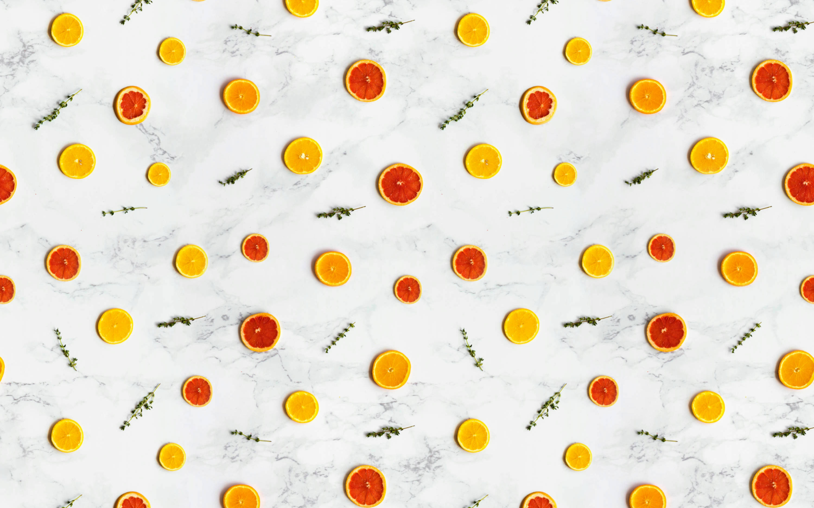
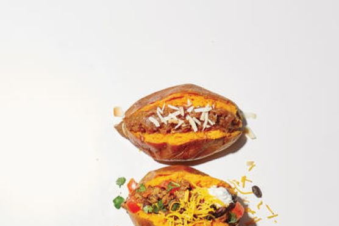

Oishii

Total Time: 75 min
Skillet BBQ Vegan Baked Beans
By Merle O'Neal
These vegan baked beans taste like home. They’re great for a chilly night in or to share at your next BBQ. The portobello mushroom bacon is the perfect topper, offering a combination of chew and crunch to satiate any bacon cravings!

Ingredients
-
Portobello Bacon
- 2 portobello mushrooms
- ⅓ cup canola oil
- ¼ cup liquid aminos
- ⅓ cup maple syrup
- 2 tablespoons brown sugar
- 1 teaspoon smoked paprika
-
Baked Beans
- 1 tablespoon canola oil
- ½ medium yellow onion, diced
- 3 cloves garlic, minced
- 1 teaspoon smoked paprika
- 1 teaspoon Dijon mustard
- ¾ cup water, plus more as needed
- ¼ cup tomato paste
- ¼ teaspoon ground black pepper
- 1½ teaspoons kosher salt, plus more to taste
- ¼ cup brown sugar
- 1 tablespoon vegan Worcestershire sauce
- 2 tablespoons molasses
- 1 tablespoon maple syrup
- 3 tablespoons apple cider vinegar
- 30 ounces canned white or Great Northern beans, drained and rinsed
Preparation
- Make the portobello bacon: Slice the portobello mushrooms into ¼-inch (6 mm) thick slices.
- In a 9 x 13-inch (22 x 33 cm) baking dish, whisk together the canola oil, liquid aminos, maple syrup, brown sugar, and paprika.
- Lay the mushroom slices in the dish, and let marinate for 30 minutes, flipping halfway through.
- Make the portobello bacon: Preheat the oven to 400°F (200°C). Set a wire rack inside a rimmed baking sheet.
- Transfer the mushroom slices to the wire rack, spacing evenly so they aren’t touching.
- Bake for 30-40 minutes, until the mushrooms are slightly leathery and have lost most of their moisture and the edges are crispy. Remove from the oven and let cool completely; the mushrooms will continue to crisp as they cool. Once cool, roughly chop the mushrooms into ½-inch (1 ¼ cm) pieces.
- Meanwhile, make the baked beans: Heat the canola oil in a large skillet over medium-low heat. When the oil is shimmering, add the onion and sauté for 10 minutes, until translucent and starting to caramelize. Add the garlic and sauté for another 5 minutes, until translucent and softened. Add the paprika and mustard and cook for about 30 seconds, until fragrant.
- Stir in the water, tomato paste, pepper, and salt. Bring to a simmer, and then add the brown sugar, vegan Worcestershire, molasses, maple syrup, and apple cider vinegar and stir to combine. Add the beans. Increase the heat to medium and simmer for 30 minutes, stirring frequently so the sauce doesn’t burn. Adjust the heat as necessary to maintain a low simmer, and add more water, a few tablespoons at a time, if the mixture starts to look dry. Season with more salt to taste, then remove the pan from the heat.
- Serve the beans immediately, garnished with the portobello bacon, or let cool to room temperature, cover, and refrigerate until ready to serve. Store the portobello bacon in an airtight container at room temperature until ready to use.
- Enjoy!